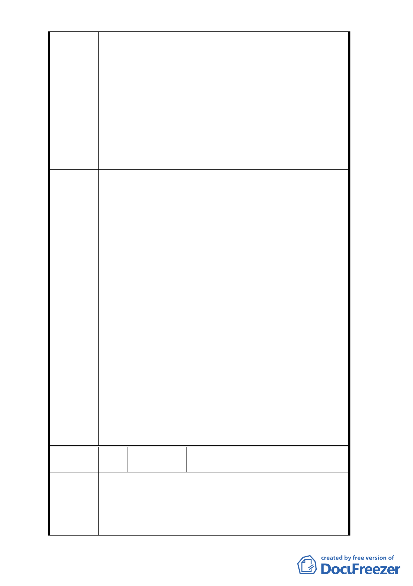

入本計畫區適用「臺北市土地使用分區管制自治條例」
第三種商業區予以更正為第三種商業區，避免違法而與
本市商三（特）土地混淆。
2.建議將本公司依據都市計畫法第 24 條所提出解除六種使
用用途限制之細部計畫變更案併入本修訂案一同解決。
3.深入探討 80 年 2 月 13 日公告之都市計畫說明書之記載
及相關歷史資料（78 年 11 月 2 日第六次專案小組會議
紀錄及 78 年 10 月 27 日製表『京華再開發計畫案不同
使用強度建築面積比較表』），確定計畫區內扣除捐贈公
園以外之土地之基準容積率應為第三種商業區 560%
，並予以公告。
1. 查依都市計畫法第40條規定「都市計畫經發布實施後，
應依建築法之規定，實施建築管理」，本市早期部分劃
設或變更之商業區於都市計畫書另規定其管制事項，有
別於當時「臺北市土地使用分區管制規則」（現為自治
條例）之規定，為達簡政便民，提高行政效率，並避免
後續管制混淆，故自84年9月27日公告實施之「修訂台
北市主要計畫商業區（通盤檢討）計畫案」，始於都市
計畫書規定事項有別於臺北市土地使用分區管制規則
（現為自治條例）者皆加註「特」，表示都市計畫書有
擬建議處 「特別規定」，尚非加註「特」者皆為84年所變更之分
理 意 見 區。
2. 次查本案於本府80年2月13日府工二字第 80003366 號
公告「『修訂台北市土地使用分區（保護區，農業區除
外）計畫（通盤檢討）案 』內有關八德路四段、東寧
路、縱貫鐵路、八德路四段106巷所圍地區（原唐榮鐵
工廠）土地使用計畫案」中變更為「商業區（第三種商
業區）」，其僅得作6大項商業使用，與本市土地使用分
區管制自治條例所規定之第三種商業區不同，且容積率
亦依計畫書所載為392% ,相關規定仍應依都市計畫書辦
理。
委
決
員
會
議
同編號1。
編
號 3-a
陳情人
京○城股份有限公司（102.10.30 臺北
市議會應曉薇研究室函轉）
陳情位置
都委會於 102 年 10 月 24 日召開委員會議，審議修訂
陳情理由
「修訂『台北市土地使用分區（保護區、農業區除外）計
畫（通盤檢討）案內有關八德路四段、東寧路、縱貫鐵路
、八德路四段 106 巷所圍地區（原唐榮鐵工廠）土地使用
- 38 -